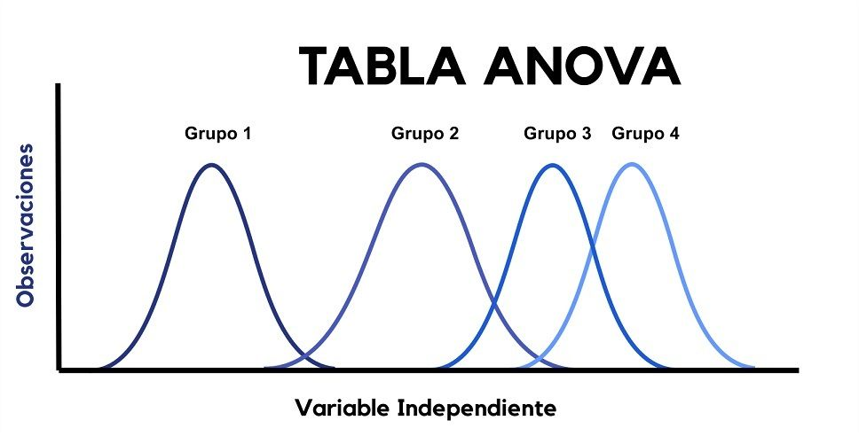
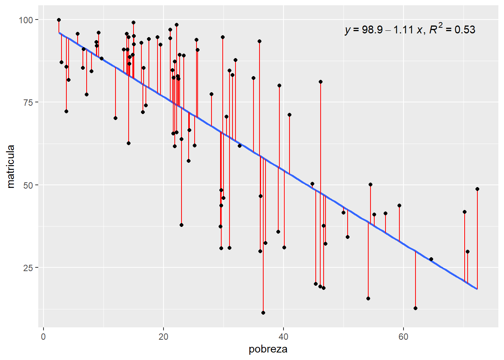
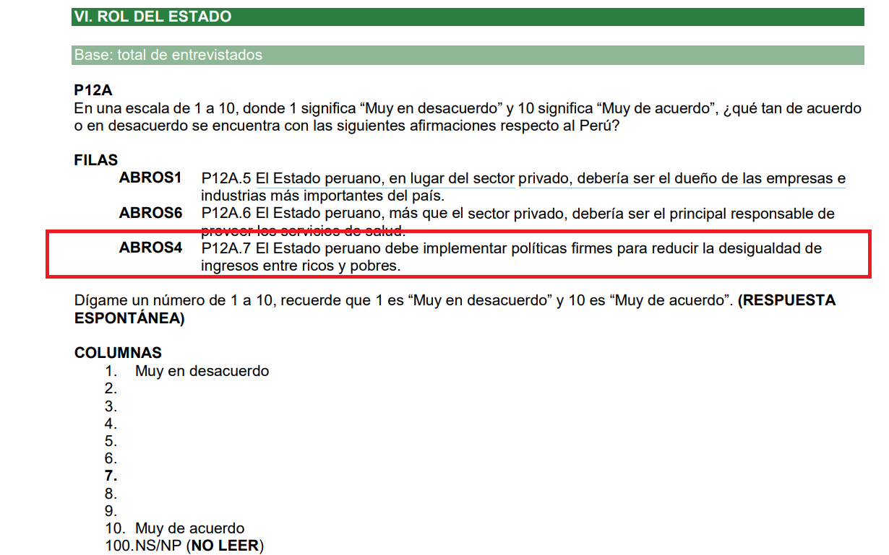

Sesión 7 ANOVA: Comparación en más de dos muestras
7.1 Recordemos


7.2 ANOVA de un factor

El análisis de varianza (ANOVA) de un factor en R es una técnica estadística utilizada para comparar la media de una variable numérica entre más de dos grupos. Se realiza un ANOVA de un factor cuando se tiene un solo factor categórico (con tres o más niveles) que se utiliza para agrupar los datos, y se quiere determinar si existe una diferencia estadísticamente significativa entre las medias de los grupos.
El ANOVA es una herramienta útil para analizar datos experimentales en los que se desea comparar las medias de más de dos grupos. En lugar de realizar múltiples pruebas t de dos muestras, el ANOVA nos permite realizar una sola prueba para determinar si hay una diferencia significativa entre los grupos.
Los pasos para aplicación del ANOVA son los mismos que los seguidos para el T de Student, visto la clase anterior.
7.2.2 Paso 0: Análisis exploratorio de datos (EDA)
ABRIR LA DATA
library(pacman)
p_load(haven, tidyverse, lsr, kableExtra)
enades<-read_spss("https://github.com/ChristianChiroqueR/banco_de_datos/raw/main/ENADES_2022.sav")CONFIGURACIÓN ADECUADA DE LAS VARIABLES A UTILIZAR
7.2.2.1 Nuestra numérica: Índice aditivo
En este caso deseamos realizar un índice aditivo de Percepción sobre la desigualdad en el acceso a servicios públicos.
Para ello, vamos a utilizar estas cuatro variables:

Tenemos que tener en cuenta que las variables de insumo son ordinales y tienen las siguientes categorías: 1. Muy desigual, 2. Poco desigual y 3. Nada Desigual.
Veamos los descriptivos para cada variable:
summary(enades$p11.1)## Min. 1st Qu. Median Mean 3rd Qu. Max. NA's
## 1.000 1.000 1.000 1.443 2.000 3.000 35table(enades$p11.1)##
## 1 2 3
## 912 503 80summary(enades$p11.2)## Min. 1st Qu. Median Mean 3rd Qu. Max. NA's
## 1.000 1.000 1.000 1.316 2.000 3.000 33table(enades$p11.2)##
## 1 2 3
## 1080 361 56summary(enades$p11.3)## Min. 1st Qu. Median Mean 3rd Qu. Max. NA's
## 1.000 1.000 1.000 1.442 2.000 3.000 45table(enades$p11.3)##
## 1 2 3
## 885 544 56summary(enades$p11.4)## Min. 1st Qu. Median Mean 3rd Qu. Max. NA's
## 1.000 1.000 1.000 1.178 1.000 3.000 38table(enades$p11.4)##
## 1 2 3
## 1274 170 48Ok, hemos corroborado que no tenemos el problema de los NS/NR (999, 888, etc.)
Vamos a recodificar cada variable para que el orden sea intuitivo
enades<-enades |>
mutate(p11.1n=case_when(p11.1==1~ 3,
p11.1==2~2,
p11.1==3~1,
TRUE~NA_real_),
p11.2n=case_when(p11.2==1~ 3,
p11.2==2~2,
p11.2==3~1,
TRUE~NA_real_),
p11.3n=case_when(p11.3==1~ 3,
p11.3==2~2,
p11.3==3~1,
TRUE~NA_real_),
p11.4n=case_when(p11.4==1~ 3,
p11.4==2~2,
p11.4==3~1,
TRUE~NA_real_))Corroboramos:
table(enades$p11.1n)##
## 1 2 3
## 80 503 912table(enades$p11.2n)##
## 1 2 3
## 56 361 1080table(enades$p11.3n)##
## 1 2 3
## 56 544 885table(enades$p11.4n)##
## 1 2 3
## 48 170 1274Ahora sí podremos realizar el índice aditivo.
enades<-enades |>
mutate(indice_aditivo=p11.1n+p11.2n+p11.3n+p11.4n)enades |>
count(indice_aditivo)## # A tibble: 10 × 2
## indice_aditivo n
## <dbl> <int>
## 1 4 5
## 2 5 3
## 3 6 15
## 4 7 35
## 5 8 82
## 6 9 145
## 7 10 274
## 8 11 337
## 9 12 550
## 10 NA 84Como nuestras variables de insumo tenían como valores posibles 1-3, nuestro índice tendrá una escala posible de 4 (si la persona contestó a todo con 1) a 12 (si la persona contestó a todo con 3).
Sobre este índice ya creado, podemos cambiarle la escala para que no sea de 4-12 sino de 0-8.
enades<-
enades |>
mutate(indice_aditivo=indice_aditivo-4)enades |>
count(indice_aditivo)## # A tibble: 10 × 2
## indice_aditivo n
## <dbl> <int>
## 1 0 5
## 2 1 3
## 3 2 15
## 4 3 35
## 5 4 82
## 6 5 145
## 7 6 274
## 8 7 337
## 9 8 550
## 10 NA 847.2.2.2 Nuestros grupos
enades$ambito<-factor(enades$ambito, # Nombre de la variable a convertir
levels=1:3, # Definimos los niveles (esta variable sólo tenía 2 niveles)
labels=c("Lima Metropolitana", "Perú urbano", "Perú rural")) #Colocamos sus etiquetas
table(enades$ambito)##
## Lima Metropolitana Perú urbano Perú rural
## 536 737 257EXPLORACIÓN DE DATOS MUESTRALES
enades |>
group_by(ambito) |>
summarise(Media=mean(indice_aditivo, na.rm = T))## # A tibble: 3 × 2
## ambito Media
## <fct> <dbl>
## 1 Lima Metropolitana 6.79
## 2 Perú urbano 6.53
## 3 Perú rural 6.607.2.3 Paso 1: Establecer hipótesis
Debemos plantear las hipótesis nula y alternativa.
Recuerda que cada prueba tiene su hipótesis nula, por lo que hay que memorizar algunas de estas. En el caso de la Prueba T, las hipótesis son las siguientes:
| Hipótesis | Descripción |
|---|---|
| Hipótesis nula | Las medias poblacionales en todos los grupos son iguales |
| Hipótesis alterna | Al menos una de las medias de las grupos es diferente de las demás. |
Estas son las hipótesis que vamos a validar con nuestra prueba.
7.2.4 Paso 2: Verificar supuestos
INDEPENDENCIA
Las muestras deben ser independientes. El muestreo debe ser aleatorio. Vamos a asumir ello porque normalmente no tenemos control sobre el proceso de muestreo.
DISTRITUCIÓN NORMAL
Para los fines de este curso, asumimos que la variable numérica proviene de una distribución normal en la población.
HOMOGENEIDAD DE VARIANZAS
Para los fines de este curso, asumimos que la variable numérica posee homogeneidad de varianzas en cada grupo analizado.
7.2.5 Paso 3: Establecer nivel de significancia
Estamos trabajando a un 95% de confianza, por lo que nuestro nivel de significancia será 0.05.
\[\alpha = 0.05\]
7.2.6 Paso 4: Calcular estadístico de prueba y p-valor
Para calcular el ANOVA de un factor utilizamos la función aov():
anova1 = aov(enades$indice_aditivo~enades$ambito)
summary(anova1)## Df Sum Sq Mean Sq F value Pr(>F)
## enades$ambito 2 19 9.679 4.34 0.0132 *
## Residuals 1443 3218 2.230
## ---
## Signif. codes: 0 '***' 0.001 '**' 0.01 '*' 0.05 '.' 0.1 ' ' 1
## 84 observations deleted due to missingnessEn este caso, al igual que con las otras pruebas de hipótesis, se calcula un estadístico y se compara con una distribución teórica.
7.2.7 Paso 5: Tomar una decisión
Tenemos los siguientes escenarios
| Resultado | Decisión |
|---|---|
| \(p-value <=\alpha\) | Rechazamos la hipótesis nula. |
| \(p-value >\alpha\) | No rechazamos la hipótesis nula. |
Habíamos escogido un \(\alpha = 0.05\) por lo que al obtener un p-valor de 0.0132 rechazamos la hipótesis nula de que nuestras medias poblacionales son iguales en todos los grupos.
En otras palabras, un p-valor de 0.0132 significa que hay una probabilidad muy baja de obtener los resultados observados en la muestra si la verdadera diferencia entre las medias poblacionales entre grupos es cero (hipótesis nula).
Esta probabilidad se encuentra por debajo de nuestro último nivel de rareza que estamos dispuestos a aceptar (0.05) por lo que rechazamos la H0.
7.2.8 Paso 6: Interpretación
Ahora bien, al finalizar este proceso debemos interpretar nuestros resultados:
Luego de realizar una prueba ANOVA, a un 95% de confianza, obtuvimos un p-valor de 0.0132, por lo que rechazamos la hipótesis nula de que la media del Índice de percepción de Desigualdad es igual en todos los ámbitos analizados (Lima Metropolitana, Perú urbano, Perú rural). Por ello, concluimos que existen diferencias estadísticamente significativas en alguno de los grupos poblacionales indicados.
7.3 Identificar el/los grupos diferentes
7.3.1 Pruebas post hoc: Test de Tukey
Las pruebas de comparaciones múltiples son pruebas estadísticas que se utilizan para comparar múltiples grupos y determinar si hay diferencias significativas entre las medias de los grupos. En lugar de realizar varias pruebas t o ANOVA independientes para comparar cada par de grupos, las pruebas de comparaciones múltiples realizan todas las comparaciones de manera simultánea.
La prueba Tukey, también conocida como prueba de rango múltiple de Tukey, es una prueba de comparaciones múltiples que se utiliza para determinar cuáles de los pares de grupos tienen medias significativamente diferentes. Esta prueba se basa en el rango de las medias de los grupos y en la estimación del error estándar de la media. La prueba de Tukey compara la diferencia entre las medias de cada par de grupos con una cantidad crítica que se basa en la variabilidad de los datos. Si la diferencia entre las medias de dos grupos es mayor que esta cantidad crítica, se considera que las medias son significativamente diferentes.
Una vez que hemos creado nuestro objeto ANOVA (en nuestro caso llamado anova1), podemos solicitar la prueba Tukey sobre dicho objeto.
comparacion = TukeyHSD(anova1)
comparacion## Tukey multiple comparisons of means
## 95% family-wise confidence level
##
## Fit: aov(formula = enades$indice_aditivo ~ enades$ambito)
##
## $`enades$ambito`
## diff lwr upr p adj
## Perú urbano-Lima Metropolitana -0.25275128 -0.4561655 -0.04933707 0.0100916
## Perú rural-Lima Metropolitana -0.19066752 -0.4671122 0.08577713 0.2382426
## Perú rural-Perú urbano 0.06208376 -0.2030873 0.32725478 0.8468574Para leer este resultado debemos preguntarnos dos cosas:
- ¿En qué parejas existe una diferencia significativa?
Vemos el p-value.
Estas se deben leer como Pruebas T calculada para cada pareja de grupos. ¿Cuáles eran las hipótesis que testeamos?
- Corrobora el resultado viendo el intervalo de la diferencia.
Si el 0 está incluido en este intervalo, entonces dicha diferencia puede ser 0. Siempre hay una correspondencia: si el p valor no es significativo, el intervalo de la diferencia incluye al 0.
7.3.2 Visualización
Exploramos el objeto que creamos arriba.
diferencias_parejas = as.data.frame(comparacion[1])
diferencias_parejas## enades.ambito.diff enades.ambito.lwr
## Perú urbano-Lima Metropolitana -0.25275128 -0.4561655
## Perú rural-Lima Metropolitana -0.19066752 -0.4671122
## Perú rural-Perú urbano 0.06208376 -0.2030873
## enades.ambito.upr enades.ambito.p.adj
## Perú urbano-Lima Metropolitana -0.04933707 0.01009162
## Perú rural-Lima Metropolitana 0.08577713 0.23824258
## Perú rural-Perú urbano 0.32725478 0.84685736Hemos generado un dataframe con los valores de las diferencias estimadas en cada pareja y los límites inferiores y superiores de cada diferencia estimada.
Ahora creamos una columna adicional en dicho data frame que tenga el detalle de la pareja.
diferencias_parejas$parejas = rownames(diferencias_parejas)Ahora solicitamos un gráfico de barras de error utilizando la librería ggplot2.
diferencias_parejas |>
ggplot()+
aes(x=parejas, y=enades.ambito.diff)+
geom_errorbar(aes(ymin=enades.ambito.lwr, ymax=enades.ambito.upr), width=0.2)+
geom_text(aes(label=paste(round(enades.ambito.diff, 1))), vjust=-1, size=3)+
xlab("Comparaciones") + ylab("Diferencia encontrada")+
ylim(-1, 1) +
coord_flip() +
geom_hline(yintercept = 0, color = "red", linetype="dotted") +
theme_classic()
Con este gráfico debemos corroborar los resultados que arroja la prueba de comparaciones múltiples de Tukey.
7.4 Ahora hazlo tú!
Considera las siguientes variables:
- En una escala de 1 a 10, ¿qué tan de acuerdo o en desacuerdo se encuentra con las siguientes afirmaciones respecto al Perú? - El Estado peruano debe implementar políticas firmes para reducir la desigualdad de ingresos entre ricos y pobres.

- ideologia2: Variable que distingue si la persona se identifica con una postura de izquierda, centro o derecha.
Deseamos responder a la pregunta:
¿Existe una diferencia en el apoyo a un modelo intervencionista del Estado según la postura ideológica?
Realice la prueba de hipótesis más pertinente. Muestre sus resultados e interprete.